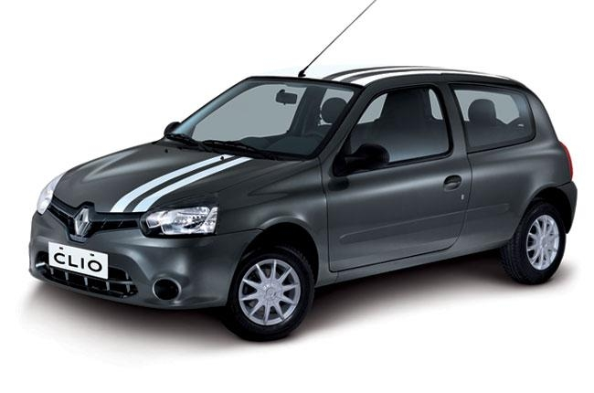

En el año 1990 ocurrieron muchas cosas dentro de Renault. De las más relevantes de cara al público fue el abandono de las denominaciones siguiendo un número, para pasar a los nombres propios. El Renault Clio tomó su nombre de Κλειώ, la musa de la Historia y de la poesía heroica, cuyo significado deriva del verbo κλέω (cantar alabanzas), por lo que se puede equiparar Clio a la idea "la que habla bien de". De la marca, claro.
Hasta hoy, aquella musa ha inspirado y ha hablado bien de Renault, como poco, a 13 millones de compradores. Sus responsables hablan del mejor superventas francés de la Historia. Entre sus logros está también haber sido el primer automóvil en repetir galardón en dos ediciones de los premios Car Of The Year: 1991 y 2006.
Como recordará cualquiera que viviera la época, el Renault Clio llegó para llenar el hueco que iba a dejar tras de sí el Renault 5, con aquella extensión de su personalidad que se conoció popularmente como Renault Supercinco. No era una empresa fácil, ya que el R-5 en sus dos generaciones llegó a rozar la nada despreciable cifra de 5,5 millones de unidades vendidas. Esto, contando con que la comercialización del R-5 llegó hasta 1996, conviviendo de largo, durante nada menos que seis años, el predecesor con su sucesor.
Estaba claro que seguir la estela del R-5 iba a ser una empresa difícil, de manera que en Renault decidieron cortar por lo sano y buscar argumentos de venta que huyeran de las comparaciones odiosas. De ahí, que el Renault Clio fue presentado oficialmente como un "coche pequeño versátil, diseñado y fabricado siguiendo los mismos criterios rigurosos que se utilizan con sus hermanos mayores".

Esto indicaba el arranque de una tendencia que iría a más, con el florecimiento del segmento B: la capacidad de ofrecer unos niveles de comodidad aproximados a los compactos, sin que fuera necesario comprar uno de los "hermanos mayores".
Unos hermanos mayores que, por cierto, cambiarían en breve, siguiendo el camino marcado por el Renault Clio. De hecho, el Clio fue el precursor del gran cambio vivido por Renault antes de finalizar el siglo XX. En 1992 arrancó el Renault Safrane para sustituir al R-25 mientras un hermano menor, el Renault Twingo, nacía para llenar el hueco que se abrió por abajo, aunque hay quien dice que lo hizo como heredero del R-4. En 1993 desembarcó el Renault Laguna sustituyendo al R-21, y en 1995 el Renault Mégane revolucionó el segmento C con sus múltiples variantes, a la vez que sustituía al R-19.
Ya en 1991, el Renault Clio Baccara vino a completar la gama con una gama de acabados superior. Tapicería de cuero gris, pomo del cambio fabricado en madera de nogal, paneles de las puertas revestidos de cuero y detalles cromados en el habitáculo fueron algunos de los elementos por los que se vendió la serie Baccara, que más adelante daría paso a los Initiale de Renault.
El primer Clio llegó equipado con ABS, climatizador, caja de cambios automática controlada electrónicamente, alarma, dirección asistida, retrovisores exteriores calefactados e incluso ajustables eléctricamente. Lógicamente algunas de estas características estaban presentes sólo en las versiones superiores, pero aquel "coche pequeño versátil" supo hacer alarde de equipamiento.
El primer Clio llegó equipado con ABS, climatizador, caja de cambios automática controlada electrónicamente, alarma, dirección asistida, retrovisores exteriores calefactados e incluso ajustables eléctricamente. Lógicamente algunas de estas características estaban presentes sólo en las versiones superiores, pero aquel "coche pequeño versátil" supo hacer alarde de equipamiento.
En 2005 se estrenó el Renault Clio III, y con él los primeros manos libres, el GPS, el control de crucero y limitador de velocidad, ocho airbags y otras mejoras en seguridad que le valieron las primeras cinco estrellas Euro NCAP para un subcompacto. Además, fue el primer Clio que dio paso a una variante Estate. Y también el primer modelo en repetir la máxima distinción en el Car Of The Year.
En 2012, la actual generación del Renault Clio llegó, siguiendo las líneas de diseño esbozadas en 2010 y en 2011 por los concepts DeZir y Captur. Esto hizo que el Clio fuera, de nuevo, el primer modelo de Renault en tomar las líneas que previeron los diseñadores de Boulogne-Billancourt y llevarlas a cabo. Como si la musa que dio nombre al subcompacto continuara inspirando al resto de la familia.